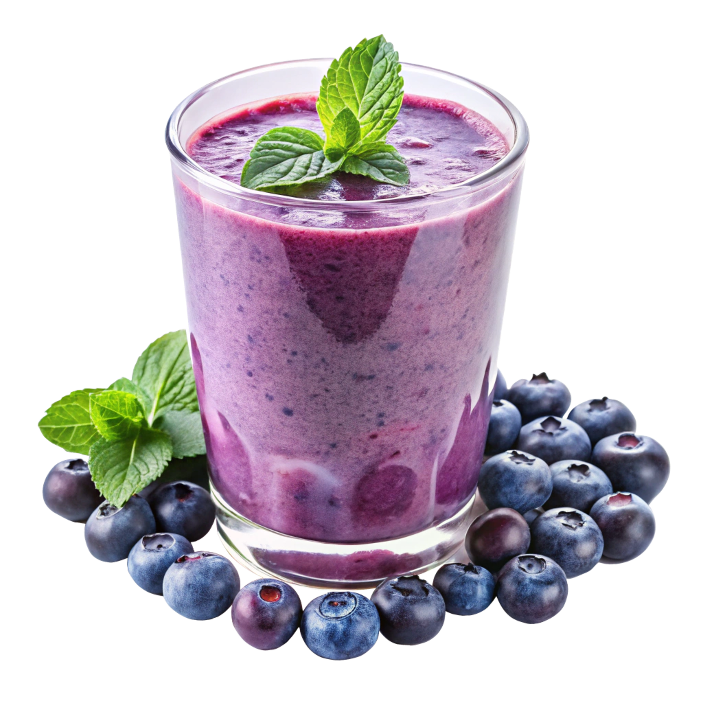

Berry Smoothie

Ingredients
- 1 cup mixed berries (frozen)
- 1 banana
- 1 cup Greek yogurt
- 1/2 cup milk (or almond milk)
- 1 tbsp honey
Preparation
- Add all ingredients to a blender.
- Blend on high until smooth, about 30-45 seconds.
- Add more milk if the consistency is too thick.
- Pour into a glass and serve immediately.